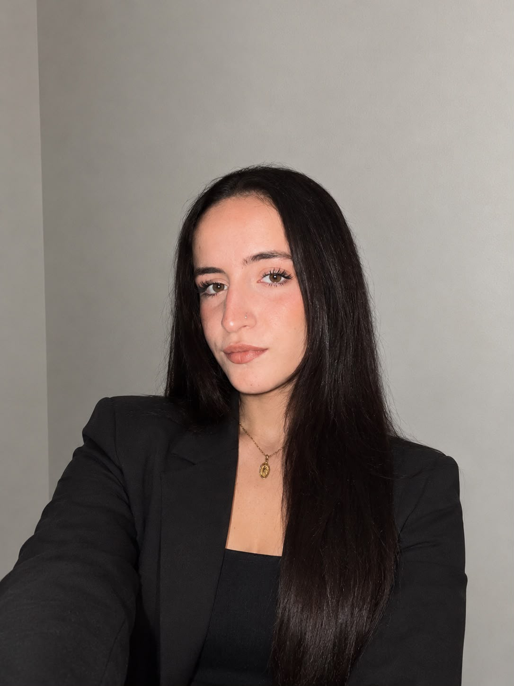
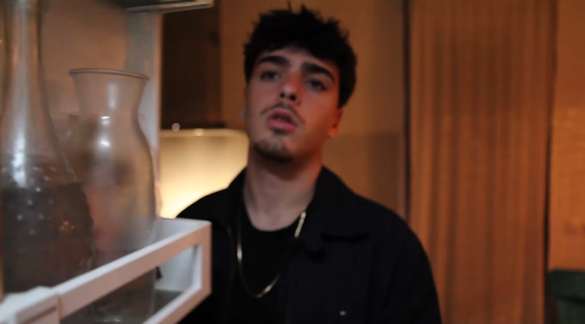
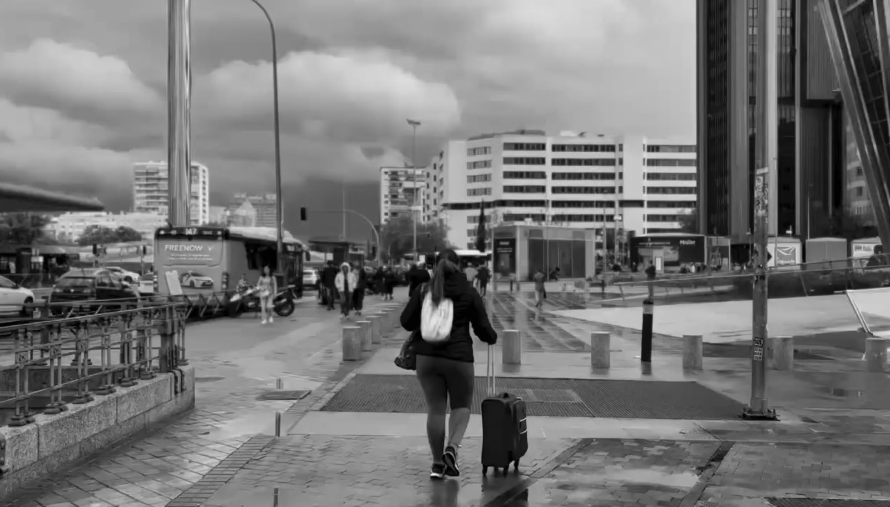
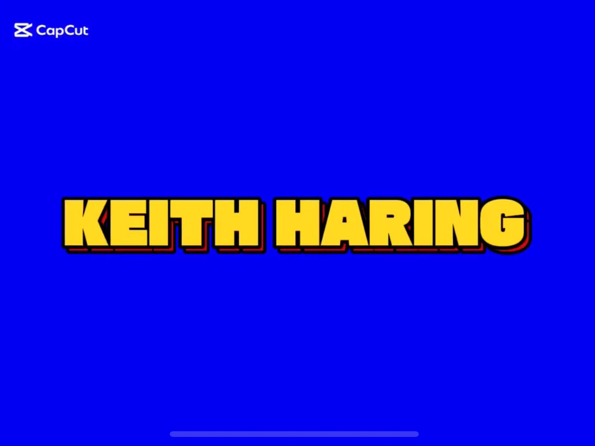

Grado en Comunicación Audiovisual
Universidad de Alcalá
2023 - 2027
Centrada en trabajos prácticos y utilizar materiales profesionales.
Estudiante de Comunicación Audiovisual
Persona organizada, responsable y con capacidad para trabajar en entornos creativos.
Ver mis proyectos
Estudiante de Comunicación Audiovisual en la Universidad de Alcalá, con interés en la producción cinematográfica, el rodaje y la creación de contenidos audiovisuales.
Me interesa mucho la producción ejecutiva, porque tengo gran capacidad de organización y me gusta el rodaje al haber formado parte en varios de ellos.
Universidad de Alcalá
2023 - 2027
Centrada en trabajos prácticos y utilizar materiales profesionales.
Curso online de producción.
2026.
Restaurante Cajera
2022-2023
Cobrar y llevar a los clientes a sus mesas
El Corte Inglés, Xanadú
2025-2026
Con la agencia GrupoSky, estuve veniendo perfumes de Hugo Boss y haciendo promoción de las ofertas que había.
Consulta algunos de los proyectos y experiencias desarrollados durante mi formación.
| Año | Proyecto | Rol | Herramientas |
|---|---|---|---|
| 2025-2026 | Cortometraje | Script | Excel |
| 2025 | Videoclip musical | Edición | CapCut |
| 2024 | Guadapod | Organizadora y presentadora | Word |
| 2026 | Diseño Gráfico | Libro editorial | InDesign |

VIDEOCLIP CAMINARÉ
Año: 2024
Es un videoclip de recreación de una canción 'Caminaré' y estuve de editora y cámara.
Ver proyecto
LORENA CIENFUEGOS
Año: 2025
Recreamos un personaje ficticio del mundo quinqui. Estuve actuando, editando y de cámara.
Ver proyecto
VIDEO EXPLICATIVO DE KEITH HARING
Año: 2025
Explicamos la vida del artista Keith Haring. Estuve en edición y voz.
Ver proyectoEmail: am3723595@gmail.com
Instagram: @alexa_2844
LinkedIn: Alexandra María Bota Tomos